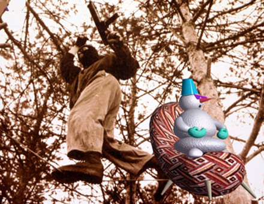

Να πάρουμε μαζί μας τα βιβλία μας ! | |
Μία πραγματική επαφή με τη φύση, που τόσο την έχουμε ανάγκη. | |

Να τρέξουμε στη φύση μακριά απο τα άγχη της πόλης. | |
Εάν δεν μπορείτε να φύγετε, σκεφτείτε την πρόταση του Roger - Pol Droit :
Έχετε πλέον κουραστεί να είσαστε εκεί. Η περιοχή με τα όριά της επαναλαμβάνεται, δεν έχει τίποτα ποιά να σας εκπλήξει ούτε καν να σας προκαλέσει το ενδιαφέρον. Η διέξοδος καθόλου δύσκολη. Ονειροπολήστε ατέλειωτα διάφορους τόπους κοντινούς ή μακρινούς. Ονειροπολήστε, μέχρι να ζαλιστείτε, ατέλειωτους συνηθισμένους τόπους, τόπους ανώνυμους, χωρίς αλαζονεία : εσωτερικές αυλές, μικρές πλατείες, αδιέξοδα σοκάκια, σοφίτες, αποθήκες, κάβες. Μέσα στην υγρασία των τροπικών, στην ξηρότητα των ερήμων, στο υγρό, κρύο των ομιχλωδών τόπων. Με φοίνικες ή με σημύδες, με κάκτους ή με γερασμένα πεύκα, με λευκή άμμο, με κόκκινους βράχους, με λάσπη, με αιώνια χιόνια, με την άσπιλη λευκότητα του αφρού πάνω στο βαθύ μπλε του ωκεανού.
Ονειροπολήστε μέχρις εκστάσεως τον ανεξάντλητο κατάλογο όλων όσων κάνουν οι άνθρωποι εκείνη τη στιγμή, σε όλα τα μέρη του κόσμου : εκείνους που κάνουν έρωτα, που χαίρονται, που φωνάζουν, που κλαίνε, τρώνε, πεθαίνουν, κοιμούνται, ιδρώνουν, πονούν, διασκεδάζουν, εκπλήσσονται, ζηλεύουν, ταξιδεύουν, μαγειρεύουν, διαβάζουν, επιστρέφουν, τραγουδούν.
Μπορείτε να κολυμπήσετε μέσα σ’ αυτή τη πολλαπλότητα, να αφήσετε τον εαυτό σας να οδηγηθεί απ’ αυτή την ατέλειωτη ποικιλία. Ο τόπος στον οποίο βρίσκεστε δεν είναι απλώς ένας μέσα στο άπειρο αλλά εμπεριέχει όλους τους άλλους, διαρκώς διαθέσιμους, σε εσάς και σε όλους.
Roger - Pol Droit
| |
Όσοι τελικά μείνετε στην πόλη, χρησιμοποιήστε το χρόνο σας με φαντασία και δημιουργικότητα κάνοντας μας SURPRISE !!!!!
| |
Eάν όλα αυτά δεν πιάσουν σκεφτείτε τι θα τραβήξουμε όλοι εμείς στην επιστροφή.
Μέχρι να γυρίσουμε θα παίζει play list : | |
Γύρισα τον κόσμο δυο φορές. | |
Είπα να επιστρέψω.
Πάλι εδώ είμαι λοιπόν,
για να γινουμε περισσότεροι. | |
Οι μύριες διαφορές έχουν λυθεί
κ’ είναι όλα τώρα πόρτες ανοιχτές.
Το δάσος το βουνό, ακολουθούνε τους αρχαίους δρόμους τους
και μέσα στην μακριά ανοιξιάτικη ημέρα
ούτε σκιά πουλιού.
Ρειζάν (1400 μ.Χ.)
| |
Αρκεί του αίματός μου η κυκλοφορία
δεν έχω ανάγκη καμιά κληρονομία.
Οι πρόγονοί μου ταπεινοί, ταπεινά κείνται
δίχως μνημεία. Να γνωρίζουν όλοι :
εκεί και εκεί, κι έτσι κι αλλιώς. Τίποτε.
Όλα πέρασαν και δεν επαναλαμβάνονται
παρεκτός ο ήλιος, παρεκτός η σελήνη !
Τώρα είναι χώμα ! Σύννεφο και άνεμος !
Να είναι. Έτσι όπως έχουν.
Και δίκαιο είναι. Έτσι όπως έχουν.
Όπως κάπου αλλού, κείνται
κάποιοι άλλοι, σκεπασμένοι από ναούς, τύμβους, πυραμίδες, κολοσσαία,
οι πρόγονοί μου, από όλους πιο μακάριοι, ας αναπαύονται κάτω από νέφη καθαρότατα !
Κάτω από θίνες
τίποτα να τους βλάψει δεν μπορεί !
Όλα πέρασαν και δεν επαναλαμβάνονται.
Τώρα είναι χώμα και πλαγιά και γκρεμός !
Ιλία Λαντίν
| |
Ο Ζαν Κλωντ Βαν Νταμ, στην ταινία του Τζων Γου Hard Target (1995), έχει τον εξής διάλογο με τον πλούσιο κακό της ταινίας, λίγο πριν τον laquo;καθαρίσειraquo;:
Κακός: laquo;Καλά, εσύ γιατί μπλέχτηκες σ’ αυτή την ιστορία;raquo;
Βαν Νταμ: laquo;Και οι φτωχοί πλήττουν.raquo;
Roger Pol Droit
| |
Έρχεται μια μέρα που από πικρία γινόμαστε τόσο αδιάφοροι που τίποτα δεν μας αγγίζει. Όλα μας φαίνονται γνώριμα. Όλα τελειώνουν για να ξαναρχίσουν. Είναι η ώρα της εξορίας, της παρακμής, του θανάτου της ψυχής.
Άλμπερ Καμύ | |
Για να ξαναζωντανέψουμε μας χρειάζεται μια περίοδος χάριτος : η πλήρης απώλεια του εαυτού μας ή μια πατρίδα. Κάποια πρωινά στη στροφή του δρόμου, μια γλυκιά δροσοσταλίδα που πέφτει στην καρδιά, αφήνει τη γεύση της και χάνεται. Η δροσιά της όμως παραμένει, και αυτήν αποζητά η καρδιά μας. Από εδώ πρέπει να ξαναρχίσει.
Άλμπερ Καμύ
| |
Μην κακολογείς τον άνθρωπο. Κάθεται μέσα σου και σε κρυφακούει.
Lec Stanislaw Jerzy
| |
Δεν μπορείς να μιλήσεις για την θάλασσα
με το βατράχι που ζει σε ένα πηγάδι
ούτε για τον πάγο με ένα έντομο του καλοκαιριού.
Τσουάνγκ Τσού
| |
Καλαμπούρια που κυκλοφορούσαν στην αρχαία Ελλάδα για τους μάντεις :
Ένας μάντης στην ερώτηση αν θα κερδίσουν στη μάχη με τους εχθρούς τους απάντησε : laquo; Θα νικήσετε τους εχθρούς σας, εάν στην παράταξη της μάχης δεν βλέπουν αυτοί τις πίσω τρίχες από τα μαλλιά σαςraquo;.
| |
Καλαμπούρια που κυκλοφορούσαν στην αρχαία Ελλάδα για τους μάντεις :
Κάποιος που γύρισε από ταξίδι επισκέφτηκε κάποιον μάντη και τον ρώτησε για τους δικούς του. Ο μάντης του είπε : laquo;Όλοι είναι καλά και ο πατέρας σου το ίδιοraquo;. Και αυτός του είπε : laquo;Μα ο πατέρας μου έχει πεθάνει εδώ και δέκα χρόνιαraquo;. Και ο μάντης απάντησε : laquo;Δεν έχεις ιδέα ποιός είναι ο αληθινός σου πατέραςraquo;.
| |
Το TOP 10 των ερωτήσεων στο μαντείο των Δελφών
1. Θα μου πληρώσουν τον μισθό ;
2. Θα με πουλήσουν για δούλο ;
3. Θα χωρίσω από την γυναίκα μου ;
4. Θα με φαρμακώσουν ;
5. Θα βγάλουν σε πλειστηριασμό την περιουσία μου ;
6. Θα πάρω τα λεφτά ;
7. Ζει ο ξενιτεμένος ;
8. Μου επιτρέπεται να κάνω συμφωνία με άλλον ;
9. Θα με εξορίσουν ;
10. Θα μείνω εκεί που θα πάω ;
| |
Το τριφύλλι των 101 ευχών.
Από διαφήμιση σε περιοδικό του 70, όπου σημείωνες την ευχή που ήθελες να πραγματοποιηθεί και έστελνες τα χρήματα. Ήταν ένα μαγικό μενταγιόν που κόστιζε 2.900 δραχμές και είχε εγγύηση 6 μηνών ?????
1. Να κερδίσω αμέσως 80.000 δραχμές στο προ-πο.
2. Να πιάσω δύο φορές το προ-πο στο ερχόμενο δίμηνο.
3. Να μπορέσω να αγοράσω ένα διαμερισματάκι στο παιδί μου.
4. Να μπορώ να εντυπωσιάζω τους φίλους μου.
5. Να μπορώ να ντύνομαι κομψά και ακριβά.
6. Να έχω τα περισσότερα λεφτά από όλους στον κύκλο μου.
7. Να γίνω εγώ αφεντικό των σημερινών ανωτέρων μου.
8. Να βγάζω διπλάσια από όσα βγάζω σήμερα.
9. Να βγάζω πενταπλάσια από όσα βγάζω σήμερα.
10. Να αποκτήσω ισχυρή επιρροή στο περιβάλλον μου.
11. Να πάρω πτυχίο ανώτατης σχολής.
12. Να μου εκδηλώσει τα αισθήματά του το πρόσωπο που θέλω.
13. Να δημιουργήσω δεσμό με τον τάδε (την τάδε) συνάδελφο.
14. Να ξαναέρθει γρήγορα η αγάπη μου που λείπει μακριά.
15. Να απαλλαγώ από τα κόμπλεξ μου.
16. Να γοητεύω τις γυναίκες.
17. Να αρέσω στους άντρες.
18. Να αποκτήσω ευχέρεια λόγου.
19. Να κερδίσω την γενική προσοχή.
20. Να κάνω κάτι που να με συγχαίρουν όλοι.
21. Να αποσπάσω την γενική συμπάθεια.
22. Να μπω στις παρέες των πλουσίων.
23. Να μπω στους καλλιτεχνικούς κύκλους.
24. Στους κινηματογραφικούς κύκλους.
25. Στους θεατρικούς κύκλους.
26. Να γίνω συγγραφέας.
27. Να γίνω τόσο γνωστός, ώστε να με αναγνωρίζουν όλοι στο δρόμο.
28. Να ζηλεύουν όλοι οι άλλοι εμένα.
29. Να ζήσω μέσα σε ένα όνειρο χλιδής και φήμης.
Ψηφίστε τώρα την δική σας ευχή !!!!!!
| |
Τα αντίδοτα του έρωτα
Οβίδιος, Ρωμαίος ποιητής (43 π.Χ.)
1. Φρόντισε να έχεις πάντα κάτι να κάνεις.
2. Βάλε μπρός για μεγάλα μακρινά ταξίδια όσο δυνατές και εάν είναι οι αλυσίδες που σε κρατάνε.
3. Μην πάψεις ποτέ να θυμάσαι πόσο σε έχει ταλαιπωρήσει αυτή η στρίγγλα, ούτε τις ταπεινώσεις που έχεις υποστεί για χάρη της.
4. Φρόντισε η ερωμένη σου να εκδηλώνει τα μειονεκτήματά της. Αυτό προκάλεσέ το ακόμα και με παραπλανητικά κομπλιμέντα. Παραδείγματος χάριν : Αν η κοπέλα τσιρίζει, ζήτα της να τραγουδήσει. Αν δεν μπορεί να κουνήσει ούτε το χέρι της βάλτην να χορεύει. Πετάει κοτσάνες άμα μιλάει ; Κάν’την να σου μιλάει συνέχεια.
5. Πολύ καλό θα ήτανε να πηγαίνεις στο σπίτι της πρωί πρωί και χωρίς να έχεις ειδοποιήσει για να την πιάνεις πριν καλλωπιστεί.
6. Όταν σου ζητήσει να ξαναενωθείται, φρόντισε να έχεις πάει νωρίτερα με άλλη γυναίκα.
7. Η μοναξιά είναι καταστροφή.
8. Εξαφάνισε ότι σου την θυμίζει.
9. Κόψε τα αφροδισιακά φαγητά.
| |
|
35 readers online
|